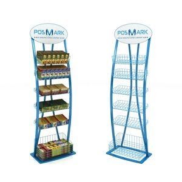

Стойки для рекламной продукции
Среди современного POS-оборудования особое место занимают рекламные стойки. Они используются для показа того или иного товара на презентациях, ярмарках, выставках, а также и для последующих продаж. Основное назначение стойки для рекламной продукции - представить эту продукцию в как можно более выгодном свете по сравнению с конкурентами, привлечь к ней внимание. Как правило, стойки рекламного назначения изготавливаются под заказ, с учетом особенностей товара, который предполагается размещать, и необходимости продвигать бренд.
Изготовление рекламных стоек в компании «Формула»
Мы успешно реализуем любые проекты в области POS-конструкций, благодаря собственному производству, ориентированному на инновационные технологии и использование разнообразных материалов, а также опыту и креативному подходу к делу специалистов нашей команды. Вам достаточно рассказать, какой, по Вашему мнению, должна быть стойка для рекламной продукции - и мы непременно учтем все пожелания и нюансы.
Компания «Формула» предлагает изготовление рекламных стоек на заказ:
- Из различных современных материалов: металлический прокат, проволока, сталь и пластик, алюминий, оргстекло, ПВХ, полимерные пленки и порошковые красители и т.п.;
- Оригинальной конструкции, идеально подходящей для демонстрации конкретного вида товара;
- В напольном и настольном вариантах;
- С высоким уровнем качества и по разумным, согласованным с заказчиком ценам.